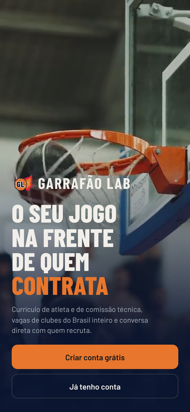
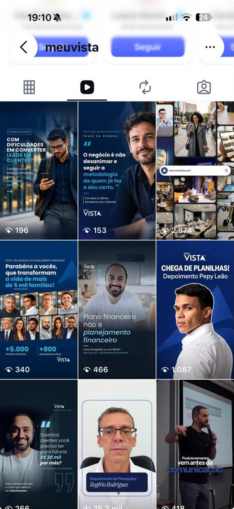
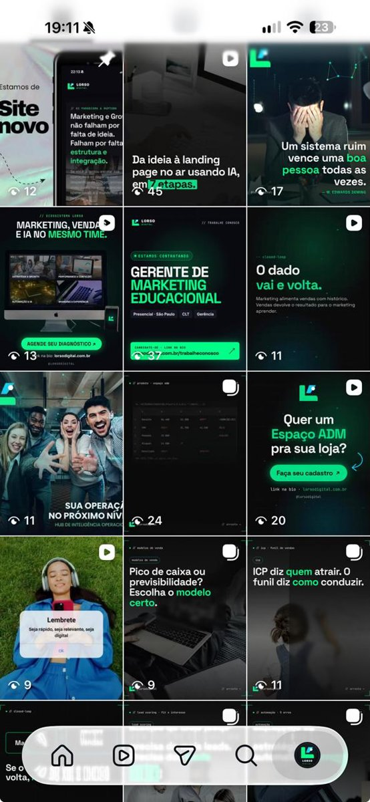
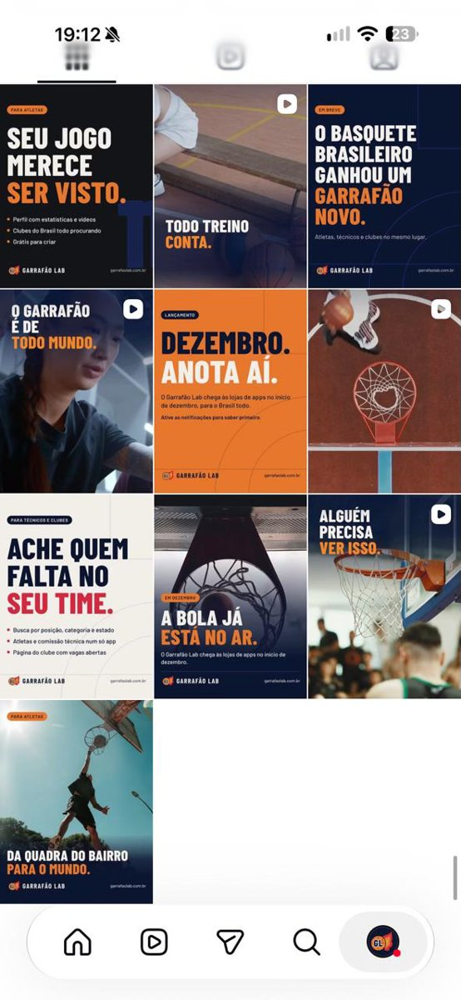

Marketing, Growth e Operações Comerciais com sistemas, apps, sites e conteúdo construídos sob medida.
Mais de 17 anos à frente de unidades de negócio em EdTech, SaaS, Fintech e E-commerce. Para cada projeto, montamos o time certo com especialistas de mercado.
em receita gerada com growth, branding e go-to-market
anos liderando operações de grande porte
etapas de uma metodologia validada
sistemas, apps e sites neste portfólio
Nossa metodologia em 5 etapas para garantir resultados previsíveis, eliminando achismos e alinhando execução diária aos objetivos financeiros da sua empresa.
Análise profunda da maturidade do seu negócio, auditoria de canais e localização cirúrgica dos gargalos de conversão.
Plano de ação executivo com metas trimestrais, desenho de funil, alocação de verba e projeção de retorno financeiro.
Time de especialistas selecionado para cada desafio, implementando campanhas, fluxos de automação e páginas com agilidade e alto rigor técnico.
Inteligência Artificial e engenharia de dados refinando criativos, segmentações e taxas de conversão de ponta a ponta.
Dashboards em tempo real, transparência sem filtros, tração acelerada e comprovação contínua de retorno sobre investimento (ROI).
Funis B2B e B2C, tráfego pago em Google e Meta, squads de SDR e Closer.
Discovery, posicionamento, pricing e lançamento de ofertas de alto ticket.
Omnichannel, expansão B2B e atacado, políticas comerciais de canal.
Marca, conteúdo, automação de CRM e WhatsApp com inteligência artificial.
Depois de colocar para rodar, a gente fica junto: lê os números, ajusta a rota com o time e documenta o processo para a operação seguir com autonomia.
Mídia, CRM e vendas lidos com o que fazer a seguir.
Alinhamentos com marketing, comercial e operação.
Indicadores à vista e metas trimestrais acompanhadas.
Processos documentados e time treinado para rodar sozinho.
Maturidade por área, gargalos e plano de ação.
Cronograma, checklist e metas do lançamento.
Resultado da loja mês a mês, sem planilha.
Atletas e clubes de basquete no mesmo lugar. Lançamento Q1 2027.
Marketplace de terapeutas holísticos. Lançamento Q1 2027.
Terreiros por região, giras e agendamento. Lançamento Q1 2027.
Do briefing ao ar, com identidade nova.
LPs de tráfego pago integradas ao CRM.
Loja, SEO, taxonomia e catálogo.
Meu Vista, LORSO e Garrafão Lab.
Artigos com SEO e capital social.
Hello Gabiru e Dolce Abbraccio.
O seu jogo na frente de quem contrata. App que conecta atletas e comissão técnica de basquete aos clubes do Brasil.

Marketplace que conecta clientes a terapeutas holísticos.
App para encontrar terreiros e locais sagrados por região, com respeito e acolhimento.
Família de landing pages de tráfego pago para planejadores financeiros, com formulário de demonstração integrado ao CRM e ao time de SDR.
clientes finais atendidos pela plataforma
planejadores ativos
O tráfego pago chega pelo telefone. Por isso cada LP nasce no mobile, com linguagem e cor próprias para cada oferta, e depois se adapta ao desktop.
Código leve e rápido para quem chega pelo anúncio.
Blocos na ordem da decisão: promessa, prova, perfis e formulário.
Botões ao alcance do polegar, contraste alto e cards no lugar de tabelas.
Topo fixo com o botão de demonstração sempre visível.
7 categorias e 37 subcategorias em três eixos que se cruzam.
CLIQUE NO REELS PARA VER COM SOM



Head de Marketing com landing pages de tráfego pago, conteúdo B2B e B2C e integração do marketing com o time comercial.
Operações e Growth com mídia em Meta e Google, migração da loja, SEO, taxonomia e catálogo integrado.
Estratégia de produtos educacionais e lançamentos perpétuos, estruturação de ofertas high ticket e gestão operacional de ponta a ponta.
Gestão de marketing em referência nacional de educação financeira.
Marca, RP, LinkedIn, redes sociais e vídeo com uma voz só.
Meta Ads, Google Ads e LPs que transformam clique em lead.
IA no conteúdo, no diagnóstico e na otimização das campanhas.
CRM, WhatsApp e réguas de e-mail levando o lead até a venda.
Varejo, atacado e e-commerce com canais organizados e DRE.
Diagnóstico, dashboards, avaliação de reports e metas.
Go-to-market, ofertas e plataforma de lançamentos.
Sistemas e apps próprios construídos do zero.
Uma conversa para entender o momento do negócio, mapear gargalos e mostrar ao vivo os sistemas que aceleram o resultado.